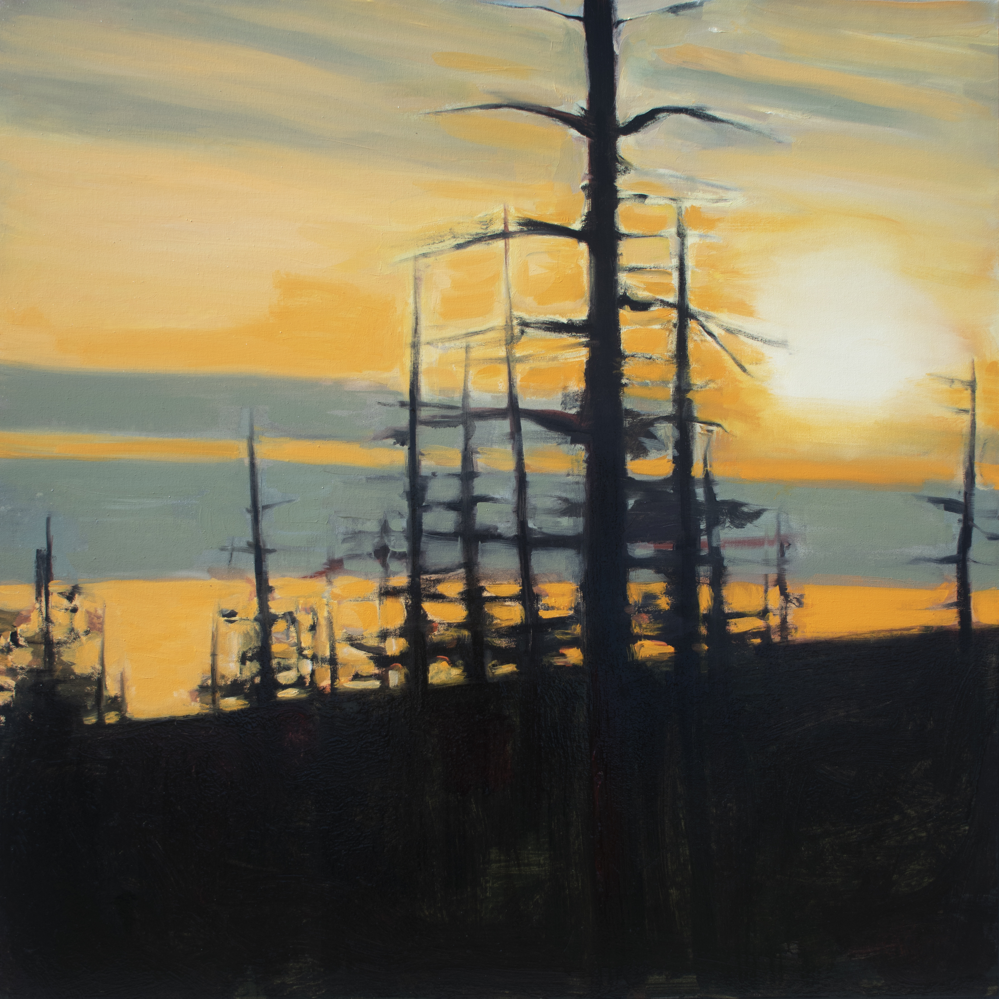

bio
Wood Lake is a band from Ottawa, Ontario that is currently comprised of Harry McGuire (guitar/vocals), Rhian Meaney (drums), Paige Genest (piano/double bass) and Colin Boudreault (electric bass/vocals). Their sound can be classified as “dark indie,” having been influenced by acts such as Mount Eerie, Agalloch and Boards of Canada.
Following the release of 2018’s Purgatory, which was composed and produced exclusively by McGuire, Wood Lake have reunited to create their third full-length LP, entitled Mer Bleue. This new album expands upon ideas and motifs that are present in previous releases, using new instrumentation and production techniques to create a newly evolved and highly engaging listening experience.
Inspired by McGuire’s time in Warsaw as well as the band’s hometown of Ottawa, Mer Bleue combines widely divergent sources of musical inspiration to craft a sound that is as soothing as it is unsettling. Warm guitars combine with cold synths and harsh noise plays off of glistening piano performances in order to create Wood Lake’s most sonically intriguing release yet.
track listing

- 1. A Brief Respite
- 2. Escape to the Woods
- 3. It's Not What It Was
- 4. Almonte (Rest I)
- 5. Perish (Rest II)
- 6. Lost Meaning
- 7. No One Lives Here
- 8. Some Things Are Worth Saving
- 9. Mer Bleue